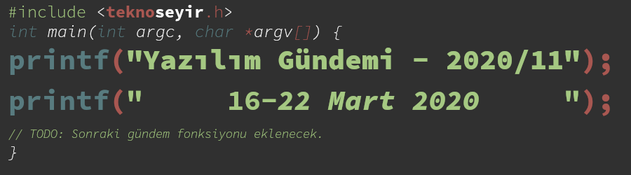
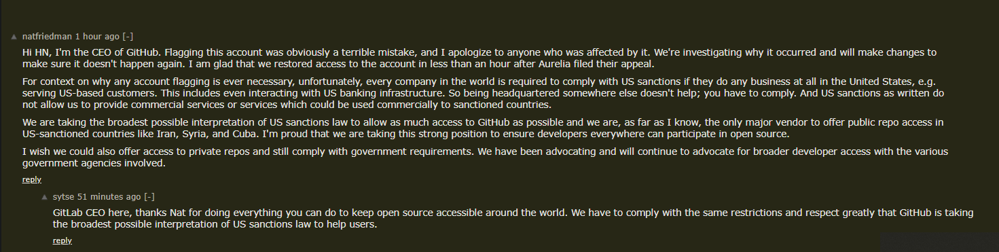
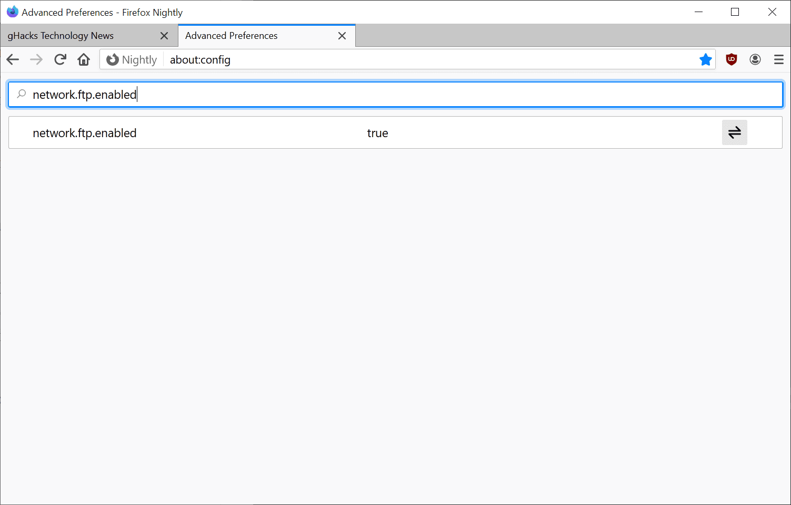
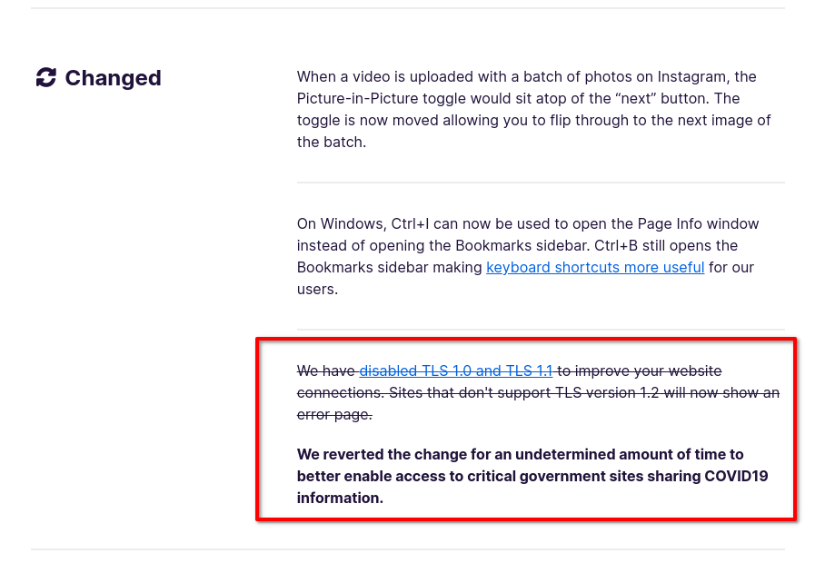
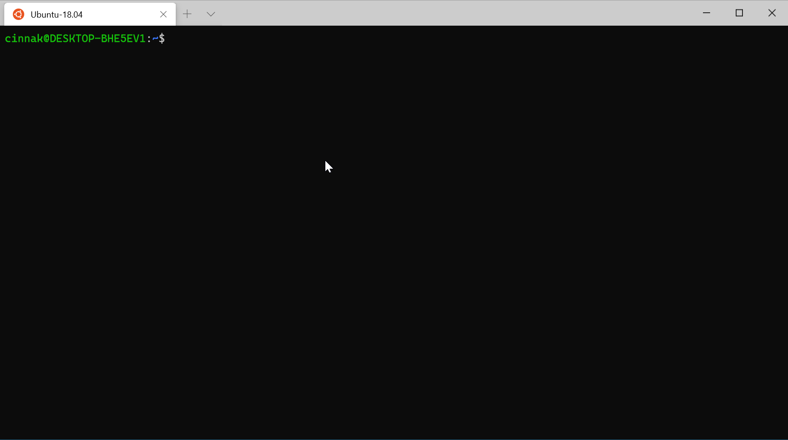

Yazılım Gündemi - 2020/11
16-22 Mart 2020
İçindekiler
- 1. GitHub, npm'i satın aldı
- 2. GitHub Mobil, Beta programından çıktı
- 3. Github, "yanlışlıkla" popüler JavaScript framework'ü Aurelia'nın tüm depolarını kilitledi
- 4. JDK 14 GA yayınlandı
- 5. Eclipse 4.15 (2020-03) sürümü yayınlandı
- 6. .NET 5 Preview 1 sürümü duyuruldu
- 7. Mozilla, Firefox'dan FTP desteğini kaldırıyor
- 8. Windows Terminal Preview v0.10 sürümü yayınlandı
- 9. Diğer Haberler
- 10. Lisans

< Önceki Gündem | 16-22 Mart 2020 | Sonraki Gündem >
1 GitHub, npm'i satın aldı
Aslında Microsoft satın aldı destek daha doğru olur. Çünkü GitHub da 2018 yılında Microsoft tarafından satın alınmıştı. npm, front-end camiası için çok önemli bir yere sahip. Her ne kadar Facebook tarafından geliştirilen yarn gibi bir alternatifi olsa da hala daha npm pastanın büyük bir bölümünün sahibi. Hatırladığım kadarıyla Windows'da NodeJS kurduğunuzda yanında otomatik olarak npm de kurulu geliyordu. Değişti mi bilmiyorum ama npm'in bu kadar çok kullanılmasının bir nedeni de budur. Öncesinde açık kaynak bir proje olarak başlayan süreç zamanla şirketleşme yolundan devam etti ve bu hafta da GitHub tarafından satın alındı.
GitHub'ın kendi sitesindeki blogunda yayınlanan yazı ile anlaşmanın gerçekleştirildiği duyuruldu. Görebildiğim kadarıyla Microsoft'un GitHub'ı satın aldığı zamanki kadar büyük tepkiler (insanlar github'dan depolarını taşımaya başlamıştı) yok. Belki de dünyanın şu an çok farklı bir gündemi olduğundan olabilir ama yine de Reddit ve HackerNews gibi platformlarda insanların tartışma konusu oldu.
Yazıdaki önemli bir nokta önümüzdeki senelerde GitHub Packages ve npm'in Private Registry özelliklerinin birleştirilecek olması. Yani ücretli olarak npm'in hizmetlerinden yararlananlar ilerleyen zamanlarda GitHub Packages'e geçmeye zorlanabilirler.
Her ne kadar Microsoft'un son birkaç yıldır yaptığı açık kaynağa yatırım işlerini beğeniyor olsam da bu kadar büyük iki geliştirici hizmeti ve aracının tek bir firmanın elinde olması beni endişelendirmiyor değil. Bu konuda siz ne düşünüyorsunuz? Yorumlar bölümünde konuşalım.
2 GitHub Mobil, Beta programından çıktı
Geçtiğimiz sene kasım ayında düzenlenen GitHub Universe 2019 etkinliğinde duyurulan GitHub Mobile Beta Program for iOS ve bu yılın başlarında duyurulan GitHub Mobile Android Beta Program haberlerinden sonra sonunda GitHub'ın mobil uygulamaları Beta'dan çıktı ve herkesin kullanımına açıldı.
Github Mobile uygulamasını indirmek için:
- Android: https://play.google.com/store/apps/details?id=com.github.android
- iOS: https://apps.apple.com/us/app/github/id1477376905
Daha önce iki işletim sistemi için de bu konuyu ele almıştık. Hatta ben direkt iOS sistemindeki Beta programına kayıt olmuş ve kısa bir inceleme de yapmıştım (bkz: Yazılım Gündemi - 18). Android için Beta programından da bu yılın ilk yazılım gündemi yazılarında (bkz: Yazılım Gündemi - 2020/03) bahsetmiştim. Ben iOS üzerindeki Beta programından kullanmaya devam ediyorum. GitHub'ın bu eksikliği gidermesi güzel ama uygulamanın daha çok gelişmesi gerek. Örneğin şu an sadece master branch'ı üzerindeki kodları görüntüleyebiliyoruz, branch değiştirme özelliği uzun zamandır istenmesine rağmen henüz eklenmiş değil. Bakalım, ben Beta programında kalmaya ve gelişmelerden sizleri haberdar etmeye devam edeceğim.
3 Github, "yanlışlıkla" popüler JavaScript framework'ü Aurelia'nın tüm depolarını kilitledi
Başlığa "popüler" yazmamın nedeni framework'ün ana deposunun yaklaşık 11.3K star almış olması, yoksa ben de ismini ilk defa duyuyorum. Gerçekten ilginç bir olay, Amerika merkezli bir şirket tarafından açık kaynak hale getirilmiş bir yazılımın tüm GitHub depoları (Aurelia.io sitesi de GitHub üzerinde host ediliyormuş), yine Amerika'nın yaptırımları nedeniyle herkes için erişime engelleniyor. Geliştiriciler ve katkı sağlayanlar kodlarına erişemiyor.

Şekil 4: GitHub CEO'unun HackerNews'deki konunun altında yaptığı açıklama.
Her ne kadar olay birkaç saat içerisinde çözümlenmiş olsa da onlarca depo'nun bu kadar bir "yanlışlık" nedeniyle erişime kapatılabiliyor olması beni rahatsız etti. İlk yazılım gündemi yazılarının birinde (bkz: Yazılım Gündemi - 3) GitHub'ın, Amerika'nın ticari yaptırımlarını uygulamaya başladığından ve birçok Kırım ve İran'lı geliştiricinin bu durumdan etkilendiğini konuşmuştuk. Ben zaten o zamandan beri her ihtimale karşı tüm depolarımı bilgisayarıma indirmiştim ve farklı yerlere yedeklemiştim ama bu vesile ile size tekrardan hatırlamış olayım. Levent Abi'nin dediği gibi: "Bulut dediğin başkasının bilgisayarıdır. Gün gelir de 'Sana hizmet vermiyorum kardeşim' derse, öylece ortada kalırsın!"
4 JDK 14 GA yayınlandı
Geçtiğimiz aylar boyunca Release Candidate sürümleri yayınlanan JDK 14 sürümü sonunda genel uygunluk (general availability) duruma geldi ve bu hafta içerisinde yayınlandı. JDK 14 ile gelen birkaç özelliği incelleyelim.
4.1 JEP 305: Pattern Matching for instanceof (Preview)
Henüz ön-izleme durumunda olan bu özellik sayesinde aşağıdaki instanceof
kullanımı daha sade bir hal aldı.
if (obj instanceof String) { String str = (String) obj; // str değişkeni ile işlemler }
Bu kullanım çok fazla yaygın fakat artık bu satırları aşağıdaki şekilde tek satıra indirebileceğiz:
if(obj instanceof String str) { // str burada kullanılabilir } else { // str burada kullanılamaz }
4.2 JEP 356: Records (Preview)
Java ya da nesne tabanlı herhangi bir dille biraz olsun haşır neşir olmuşsanız aşağıdaki sınıf yapısı size de çok tanıdık gelecektir:
public class Kisi { private String isim; private String soyisim; public Kisi(String isim, String soyisim) { this.isim = isim; this.soyisim = soyisim; } public String getIsim() { return this.isim; } public void setIsım(String isim) { this.isim = isim; } public String getSoyisim() { return this.soyisim; } public void setSoyisim(String soyisim) { this.soyisim = soyisim; } }
Gördüğünüz gibi basit bir kişi bilgisi tutmak için bile bu kadar kod yazmamız
gerekiyor (elbette bu yapının böyle olmasının çok doğru nedenleri mevcut) ama
bu JDK sürümü ile birlikte hayatımıza giren yeni tanımlama şeklide Records
ile yukarıdaki tüm kodları şu şekilde tek satıra indirebilirsiniz:
record Kisi(String isim, String soyisim) { }
Artık bunu da aynı sınıfmış gibi kullanabilirsiniz:
Kisi eren = new Kisi("Eren", "Hatırnaz"); String isim = eren.isim(); String soyisim = eren.soyisim();
Fakat bu özellim hem şu an ön-izleme durumunda, yani henüz çalışan kodlarınıza eklemek için çok erken, hem de bazı kısıtlamaları var:
- Record kendisiyle birlikte içerisindeki tüm veri alanlarını 'final' olarak işaretliyor. Dolayısıyla bu sınıfdan başka bir sınıf türetemiyor ve bir obje oluşturduktan sonra değişkenleri üzerinde değişiklik yapamıyoruz.
Bunun gibi Record özelliğine ait diğer kurallar için alt konu başlığına eklediğim bağlantıya tıklayabilir ya da Rahman Usta tarafından kodedu sitesinde yazılmış bu yazıyı okuyabilirsiniz.
JDK 14 ile gelen diğer özellikler için konu başlığına eklediğim bağlantıya tıklayabilir ya da 28 Mart tarihinde online olarak gerçekleşecek bu Webinere kayıt olabilirsiniz: Online Java 14 Webineri - İstanbul Java User Group.
5 Eclipse 4.15 (2020-03) sürümü yayınlandı
Eclipse 2020-03 sürümüne JDK 14 desteği eklemek için Eclipse Marketplace üzerinden şu eklentiyi kurabilirsiniz: Java 14 Support for Eclipse 2020-03 (4.15)
6 .NET 5 Preview 1 sürümü duyuruldu
Microsoft'un ".NET'in geleceği" olarak isimlendirdiği ve klasik .NET Framework ile .NET Core'un birleşmiş hali .NET 5 sürümünün ilk ön-izleme sürümü bu hafta içerisinde yayınlandı. Preview 1 ile birkaç performans iyileştirmesi de içeren güncellemeler herkes tarafından erişilebilir durumda. Elbette production ortamında çalışan uygulamalarınızı hemen geçirmek büyük risk olacaktır ama kişisel projeleriniz için ufaktan kullanmaya ve Microsoft'a geri bildirim göndermeye başlayabilirsiniz.
7 Mozilla, Firefox'dan FTP desteğini kaldırıyor
2020 Haziran ayında yayınlanması planlanan Firefox 77 Stable sürümü ile Mozilla takımı, Firefox içerisinden FTP desteğini "varsayılan olarak kapalı" hale hale getirecek ve sonraki versiyonlarda ise desteği tamamen kaldırmayı planlıyor. Tarayıcı üzerinden FTP kullanmak uzun zaman pek tercih edilen bir şey değil zaten, o yüzden bu desteğin kalkacak olması çok da sürpriz olmadı. Zaten Firefox 61 sürümüyle, web siteleri içerisinde yer alan ftp:// uzaktılı içerikleri (resim, müzik vb.) engellemişti. Firefox'un bu desteği kaldırmasının ardında ise güvenlik sorunları yatıyor. FTP, kullanıcı adı ve şifre dışında iletişimle ilgili bir güvenlik katmanı barındırmayan bir protokol olduğu için trafik kolayca izlenebiliyor. Google'un Chrome tarayıcısı da aynı şekilde desteğini sonlandırmaya hazırlanıyor. O da tarayıcıdaki ftp uzantılı bağlantıları sistemde yüklü olan ftp istemcisine yönlendirecek. Bir mail adresine tıkladığınız Outlook vb. programların açılması gibi.

Şekil 5: Yine de Firefox üzerinde ftp kullanmakta ısrarcıysanız about:config sayfasına girip, network.ftp.enabled değişkenini true olarak değiştirebilirsiniz
Ayrıca bu hafta içerisinde ilginç de bir olay gerçekleşti: Coronavirüs nedeniyle Firefox ve Chrome, TLS 1.0 ve TLS 1.1'e tekrar destek vermeye başladı. HTTPS bağlantıların gerçeklemesini sağlayan TLS protokolünün bu eski sürümleri aslında iki tarayıcıdan da kaldırılmıştı fakat bu hafta içerisinde bu değişiklikler geri alındı. Çünkü bazı devlet siteleri hala daha eski protokolleri kullandığı için kullanıcıların erişememesi söz konusu olabilirdi. Coronavirüs gündemdeyken bu tarz protokol versiyonu yükseltme işleri de öncelik kapsamında olmadığı için Firefox ve Chrome'da böyle bir şey yapma gereği duydu.

Şekil 6: Firefox 74.0 sürümünün değişiklik notları sayfasındaki geri alma duyurusu
8 Windows Terminal Preview v0.10 sürümü yayınlandı
Microsoft'un Terminal takımı geliştirmelere devam ediyor. Bu hafta yayınlanan sürümle birlikte Windows'un yeni terminal uygulamasının ön-izleme v0.10 sürümüne fare desteği eklendi. Artık destekleyen konsol uygulamaları üzerinde fare ile de giriş yapılabilecek.

Eklenen diğer özellik ve geliştirmeler için konu başlığına eklediğim bağlantıya tıklayabilirsiniz.
9 Diğer Haberler
- Koronavirüs nedeniyle iptal edilen ve ertelenen etkinlikler:
- Google Cloud Next '20: Digital Connect etkinliği ertelendi.
- Google I/O 2020 tamamen iptal edildi.
- PyCon US 2020 iptal edildi.
- Visual Studio 2019 version 16.5 yayınlandı.
- Facebook, kendi tarih-saat sunucularını açtı.
- Docker'a GitHub Actions desteği geldi.
- DirectX 12 Ultimate sürümü yayınlandı.
- Prettier aracının 2.0 sürümü yayınlandı.
- PHP programlama dilinin 3 ayrı sürümüne güncelleme geldi:
- PHP 7.4.4 yayınlandı.
- PHP 7.3.16 yayınlandı.
- PHP 7.2.29 yayınlandı.
- D programlama dilinin 2.091.0 sürümü yayınlandı.
- Julia programlama dilinin v1.4.0 sürümü yayınlandı.
- TensorFlow 2.2.0-rc1 sürümü yayınlandı.
- Apache Pulsar 2020 Kullanıcı Anketi Raporu yayınlandı.
- GraphQLize Alpha duyuruldu.
- Yeni bir Racket kütüphanesi duyuruldu: Template Macros.
- Tokie aracının 11.0 sürümü yayınlandı.
- Ionic CLI aracının 6.3.0 sürümü yayınlandı.
10 Lisans

Yazılım Gündemi - 2020/11 yazısı Eren Hatırnaz tarafından Creative Commons Atıf-GayriTicari-AynıLisanslaPaylaş 4.0 Uluslararası Lisansı (CC BY-NC-SA 4.0) ile lisanslanmıştır.